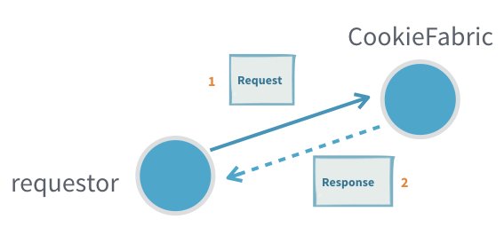
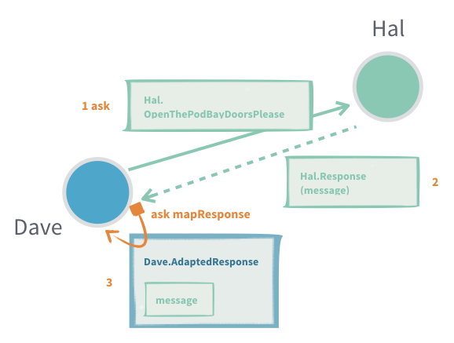
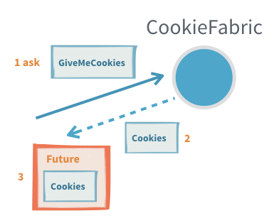
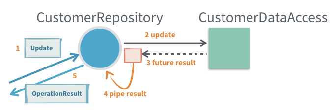
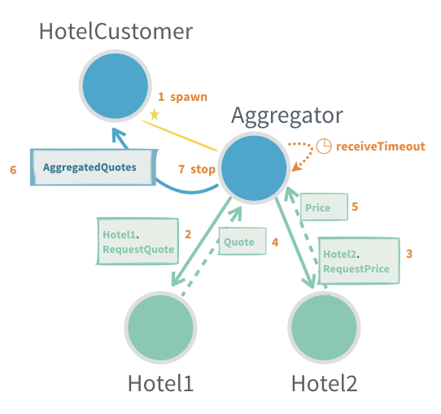
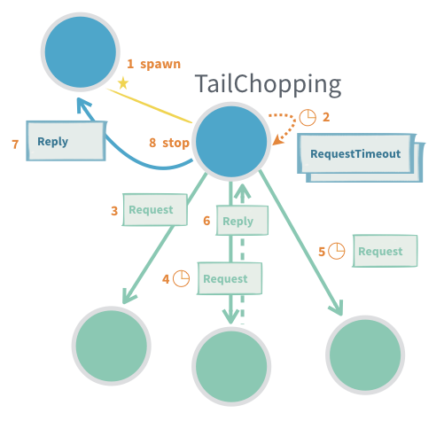
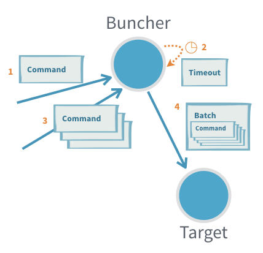
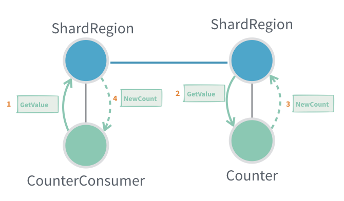

Interaction Patterns
For the Akka Classic documentation of this feature see Classic Actors.
Dependency
To use Akka Actor Typed, you must add the following dependency in your project:
- sbt
libraryDependencies += "com.typesafe.akka" %% "akka-actor-typed" % "2.6.4"- Maven
<dependency> <groupId>com.typesafe.akka</groupId> <artifactId>akka-actor-typed_2.12</artifactId> <version>2.6.4</version> </dependency>- Gradle
dependencies { compile group: 'com.typesafe.akka', name: 'akka-actor-typed_2.12', version: '2.6.4' }
Introduction
Interacting with an Actor in Akka is done through an ActorRef[T]ActorRef<T> where T is the type of messages the actor accepts, also known as the “protocol”. This ensures that only the right kind of messages can be sent to an actor and also that no one else but the Actor itself can access the Actor instance internals.
Message exchange with Actors follow a few common patterns, let’s go through each one of them.
Fire and Forget
The fundamental way to interact with an actor is through “tell”, which is so common that it has a special symbolic method name: actorRef ! messageactorRef.tell(message). Sending a message with tell can safely be done from any thread.
Tell is asynchronous which means that the method returns right away. After the statement is executed there is no guarantee that the message has been processed by the recipient yet. It also means there is no way to know if the message was received, the processing succeeded or failed.
Example:

With the given protocol and actor behavior:
- Scala
-
object Printer { case class PrintMe(message: String) def apply(): Behavior[PrintMe] = Behaviors.receive { case (context, PrintMe(message)) => context.log.info(message) Behaviors.same } } - Java
-
public class Printer { public static class PrintMe { public final String message; public PrintMe(String message) { this.message = message; } } public static Behavior<PrintMe> create() { return Behaviors.setup( context -> Behaviors.receive(PrintMe.class) .onMessage( PrintMe.class, printMe -> { context.getLog().info(printMe.message); return Behaviors.same(); }) .build()); } }
Fire and forget looks like this:
- Scala
-
val system = ActorSystem(Printer(), "fire-and-forget-sample") // note how the system is also the top level actor ref val printer: ActorRef[Printer.PrintMe] = system // these are all fire and forget printer ! Printer.PrintMe("message 1") printer ! Printer.PrintMe("not message 2") - Java
-
final ActorSystem<Printer.PrintMe> system = ActorSystem.create(Printer.create(), "printer-sample-system"); // note that system is also the ActorRef to the guardian actor final ActorRef<Printer.PrintMe> ref = system; // these are all fire and forget ref.tell(new Printer.PrintMe("message 1")); ref.tell(new Printer.PrintMe("message 2"));
Useful when:
- It is not critical to be sure that the message was processed
- There is no way to act on non successful delivery or processing
- We want to minimize the number of messages created to get higher throughput (sending a response would require creating twice the number of messages)
Problems:
- If the inflow of messages is higher than the actor can process the inbox will fill up and can in the worst case cause the JVM crash with an
OutOfMemoryError - If the message gets lost, the sender will not know
Request-Response
Many interactions between actors require one or more response message being sent back from the receiving actor. A response message can be a result of a query, some form of acknowledgment that the message was received and processed or events that the request subscribed to.
In Akka the recipient of responses has to be encoded as a field in the message itself, which the recipient can then use to send (tell) a response back.
Example:

With the following protocol:
- Scala
-
case class Request(query: String, replyTo: ActorRef[Response]) case class Response(result: String) - Java
-
public static class Request { public final String query; public final ActorRef<Response> replyTo; public Request(String query, ActorRef<Response> replyTo) { this.query = query; this.replyTo = replyTo; } } public static class Response { public final String result; public Response(String result) { this.result = result; } }
The sender would use its own ActorRef[Response]ActorRef<Response>, which it can access through ActorContext.selfActorContext.getSelf(), for the replyTo.
- Scala
-
cookieFabric ! CookieFabric.Request("give me cookies", context.self) - Java
-
cookieFabric.tell(new CookieFabric.Request("give me cookies", context.getSelf()));
On the receiving side the ActorRef[Response]ActorRef<Response> can then be used to send one or more responses back:
- Scala
-
def apply(): Behaviors.Receive[Request] = Behaviors.receiveMessage[Request] { case Request(query, replyTo) => // ... process query ... replyTo ! Response(s"Here are the cookies for [$query]!") Behaviors.same } - Java
-
// actor behavior public static Behavior<Request> create() { return Behaviors.receive(Request.class) .onMessage(Request.class, CookieFabric::onRequest) .build(); } private static Behavior<Request> onRequest(Request request) { // ... process request ... request.replyTo.tell(new Response("Here are the cookies for " + request.query)); return Behaviors.same(); }
Useful when:
- Subscribing to an actor that will send many response messages back
Problems:
- Actors seldom have a response message from another actor as a part of their protocol (see adapted response)
- It is hard to detect that a message request was not delivered or processed (see ask)
- Unless the protocol already includes a way to provide context, for example a request id that is also sent in the response, it is not possible to tie an interaction to some specific context without introducing a new, separate, actor (see ask or per session child actor)
Adapted Response
Most often the sending actor does not, and should not, support receiving the response messages of another actor. In such cases we need to provide an ActorRef of the right type and adapt the response message to a type that the sending actor can handle.
Example:

- Scala
-
object Backend { sealed trait Request final case class StartTranslationJob(taskId: Int, site: URI, replyTo: ActorRef[Response]) extends Request sealed trait Response final case class JobStarted(taskId: Int) extends Response final case class JobProgress(taskId: Int, progress: Double) extends Response final case class JobCompleted(taskId: Int, result: URI) extends Response } object Frontend { sealed trait Command final case class Translate(site: URI, replyTo: ActorRef[URI]) extends Command private final case class WrappedBackendResponse(response: Backend.Response) extends Command def apply(backend: ActorRef[Backend.Request]): Behavior[Command] = Behaviors.setup[Command] { context => val backendResponseMapper: ActorRef[Backend.Response] = context.messageAdapter(rsp => WrappedBackendResponse(rsp)) def active(inProgress: Map[Int, ActorRef[URI]], count: Int): Behavior[Command] = { Behaviors.receiveMessage[Command] { case Translate(site, replyTo) => val taskId = count + 1 backend ! Backend.StartTranslationJob(taskId, site, backendResponseMapper) active(inProgress.updated(taskId, replyTo), taskId) case wrapped: WrappedBackendResponse => wrapped.response match { case Backend.JobStarted(taskId) => context.log.info("Started {}", taskId) Behaviors.same case Backend.JobProgress(taskId, progress) => context.log.info2("Progress {}: {}", taskId, progress) Behaviors.same case Backend.JobCompleted(taskId, result) => context.log.info2("Completed {}: {}", taskId, result) inProgress(taskId) ! result active(inProgress - taskId, count) } } } active(inProgress = Map.empty, count = 0) } } - Java
-
public class Backend { public interface Request {} public static class StartTranslationJob implements Request { public final int taskId; public final URI site; public final ActorRef<Response> replyTo; public StartTranslationJob(int taskId, URI site, ActorRef<Response> replyTo) { this.taskId = taskId; this.site = site; this.replyTo = replyTo; } } public interface Response {} public static class JobStarted implements Response { public final int taskId; public JobStarted(int taskId) { this.taskId = taskId; } } public static class JobProgress implements Response { public final int taskId; public final double progress; public JobProgress(int taskId, double progress) { this.taskId = taskId; this.progress = progress; } } public static class JobCompleted implements Response { public final int taskId; public final URI result; public JobCompleted(int taskId, URI result) { this.taskId = taskId; this.result = result; } } } public class Frontend { public interface Command {} public static class Translate implements Command { public final URI site; public final ActorRef<URI> replyTo; public Translate(URI site, ActorRef<URI> replyTo) { this.site = site; this.replyTo = replyTo; } } private static class WrappedBackendResponse implements Command { final Backend.Response response; public WrappedBackendResponse(Backend.Response response) { this.response = response; } } public static class Translator extends AbstractBehavior<Command> { private final ActorRef<Backend.Request> backend; private final ActorRef<Backend.Response> backendResponseAdapter; private int taskIdCounter = 0; private Map<Integer, ActorRef<URI>> inProgress = new HashMap<>(); public Translator(ActorContext<Command> context, ActorRef<Backend.Request> backend) { super(context); this.backend = backend; this.backendResponseAdapter = context.messageAdapter(Backend.Response.class, WrappedBackendResponse::new); } @Override public Receive<Command> createReceive() { return newReceiveBuilder() .onMessage(Translate.class, this::onTranslate) .onMessage(WrappedBackendResponse.class, this::onWrappedBackendResponse) .build(); } private Behavior<Command> onTranslate(Translate cmd) { taskIdCounter += 1; inProgress.put(taskIdCounter, cmd.replyTo); backend.tell( new Backend.StartTranslationJob(taskIdCounter, cmd.site, backendResponseAdapter)); return this; } private Behavior<Command> onWrappedBackendResponse(WrappedBackendResponse wrapped) { Backend.Response response = wrapped.response; if (response instanceof Backend.JobStarted) { Backend.JobStarted rsp = (Backend.JobStarted) response; getContext().getLog().info("Started {}", rsp.taskId); } else if (response instanceof Backend.JobProgress) { Backend.JobProgress rsp = (Backend.JobProgress) response; getContext().getLog().info("Progress {}", rsp.taskId); } else if (response instanceof Backend.JobCompleted) { Backend.JobCompleted rsp = (Backend.JobCompleted) response; getContext().getLog().info("Completed {}", rsp.taskId); inProgress.get(rsp.taskId).tell(rsp.result); inProgress.remove(rsp.taskId); } else { return Behaviors.unhandled(); } return this; } } }
You can register several message adapters for different message classes. It’s only possible to have one message adapter per message class to make sure that the number of adapters are not growing unbounded if registered repeatedly. That also means that a registered adapter will replace an existing adapter for the same message class.
A message adapter will be used if the message class matches the given class or is a subclass thereof. The registered adapters are tried in reverse order of their registration order, i.e. the last registered first.
A message adapter (and the returned ActorRef) has the same lifecycle as the receiving actor. It’s recommended to register the adapters in a top level Behaviors.setup or constructor of AbstractBehavior but it’s possible to register them later if needed.
The adapter function is running in the receiving actor and can safely access its state, but if it throws an exception the actor is stopped.
Useful when:
- Translating between different actor message protocols
- Subscribing to an actor that will send many response messages back
Problems:
- It is hard to detect that a message request was not delivered or processed (see ask)
- Only one adaption can be made per response message type, if a new one is registered the old one is replaced, for example different target actors can’t have different adaption if they use the same response types, unless some correlation is encoded in the messages
- Unless the protocol already includes a way to provide context, for example a request id that is also sent in the response, it is not possible to tie an interaction to some specific context without introducing a new, separate, actor
Request-Response with ask between two actors
In an interaction where there is a 1:1 mapping between a request and a response we can use ask on the ActorContext to interact with another actor.
The interaction has two steps, first we need to construct the outgoing message, to do that we need an ActorRef[Response]ActorRef<Response> to put as recipient in the outgoing message. The second step is to transform the successful Response or failure into a message that is part of the protocol of the sending actor.
Example:

- Scala
-
object Hal { sealed trait Command case class OpenThePodBayDoorsPlease(replyTo: ActorRef[Response]) extends Command case class Response(message: String) def apply(): Behaviors.Receive[Hal.Command] = Behaviors.receiveMessage[Command] { case OpenThePodBayDoorsPlease(replyTo) => replyTo ! Response("I'm sorry, Dave. I'm afraid I can't do that.") Behaviors.same } } object Dave { sealed trait Command // this is a part of the protocol that is internal to the actor itself private case class AdaptedResponse(message: String) extends Command def apply(hal: ActorRef[Hal.Command]): Behavior[Dave.Command] = Behaviors.setup[Command] { context => // asking someone requires a timeout, if the timeout hits without response // the ask is failed with a TimeoutException implicit val timeout: Timeout = 3.seconds // Note: The second parameter list takes a function `ActorRef[T] => Message`, // as OpenThePodBayDoorsPlease is a case class it has a factory apply method // that is what we are passing as the second parameter here it could also be written // as `ref => OpenThePodBayDoorsPlease(ref)` context.ask(hal, Hal.OpenThePodBayDoorsPlease) { case Success(Hal.Response(message)) => AdaptedResponse(message) case Failure(_) => AdaptedResponse("Request failed") } // we can also tie in request context into an interaction, it is safe to look at // actor internal state from the transformation function, but remember that it may have // changed at the time the response arrives and the transformation is done, best is to // use immutable state we have closed over like here. val requestId = 1 context.ask(hal, Hal.OpenThePodBayDoorsPlease) { case Success(Hal.Response(message)) => AdaptedResponse(s"$requestId: $message") case Failure(_) => AdaptedResponse(s"$requestId: Request failed") } Behaviors.receiveMessage { // the adapted message ends up being processed like any other // message sent to the actor case AdaptedResponse(message) => context.log.info("Got response from hal: {}", message) Behaviors.same } } } - Java
-
public class Hal extends AbstractBehavior<Hal.Command> { public Behavior<Hal.Command> create() { return Behaviors.setup(Hal::new); } private Hal(ActorContext<Command> context) { super(context); } public interface Command {} public static final class OpenThePodBayDoorsPlease implements Command { public final ActorRef<HalResponse> respondTo; public OpenThePodBayDoorsPlease(ActorRef<HalResponse> respondTo) { this.respondTo = respondTo; } } public static final class HalResponse { public final String message; public HalResponse(String message) { this.message = message; } } @Override public Receive<Command> createReceive() { return newReceiveBuilder() .onMessage(OpenThePodBayDoorsPlease.class, this::onOpenThePodBayDoorsPlease) .build(); } private Behavior<Command> onOpenThePodBayDoorsPlease(OpenThePodBayDoorsPlease message) { message.respondTo.tell(new HalResponse("I'm sorry, Dave. I'm afraid I can't do that.")); return this; } } public class Dave extends AbstractBehavior<Dave.Command> { public interface Command {} // this is a part of the protocol that is internal to the actor itself private static final class AdaptedResponse implements Command { public final String message; public AdaptedResponse(String message) { this.message = message; } } public static Behavior<Command> create(ActorRef<Hal.Command> hal) { return Behaviors.setup(context -> new Dave(context, hal)); } private Dave(ActorContext<Command> context, ActorRef<Hal.Command> hal) { super(context); // asking someone requires a timeout, if the timeout hits without response // the ask is failed with a TimeoutException final Duration timeout = Duration.ofSeconds(3); context.ask( Hal.HalResponse.class, hal, timeout, // construct the outgoing message (ActorRef<Hal.HalResponse> ref) -> new Hal.OpenThePodBayDoorsPlease(ref), // adapt the response (or failure to respond) (response, throwable) -> { if (response != null) { return new AdaptedResponse(response.message); } else { return new AdaptedResponse("Request failed"); } }); // we can also tie in request context into an interaction, it is safe to look at // actor internal state from the transformation function, but remember that it may have // changed at the time the response arrives and the transformation is done, best is to // use immutable state we have closed over like here. final int requestId = 1; context.ask( Hal.HalResponse.class, hal, timeout, // construct the outgoing message (ActorRef<Hal.HalResponse> ref) -> new Hal.OpenThePodBayDoorsPlease(ref), // adapt the response (or failure to respond) (response, throwable) -> { if (response != null) { return new AdaptedResponse(requestId + ": " + response.message); } else { return new AdaptedResponse(requestId + ": Request failed"); } }); } @Override public Receive<Command> createReceive() { return newReceiveBuilder() // the adapted message ends up being processed like any other // message sent to the actor .onMessage(AdaptedResponse.class, this::onAdaptedResponse) .build(); } private Behavior<Command> onAdaptedResponse(AdaptedResponse response) { getContext().getLog().info("Got response from HAL: {}", response.message); return this; } }
The response adapting function is running in the receiving actor and can safely access its state, but if it throws an exception the actor is stopped.
Useful when:
- Single response queries
- An actor needs to know that the message was processed before continuing
- To allow an actor to resend if a timely response is not produced
- To keep track of outstanding requests and not overwhelm a recipient with messages (“backpressure”)
- Context should be attached to the interaction but the protocol does not support that (request id, what query the response was for)
Problems:
- There can only be a single response to one
ask(see per session child Actor) - When
asktimes out, the receiving actor does not know and may still process it to completion, or even start processing it after the fact - Finding a good value for the timeout, especially when
asktriggers chainedasks in the receiving actor. You want a short timeout to be responsive and answer back to the requester, but at the same time you do not want to have many false positives
Request-Response with ask from outside an Actor
Sometimes you need to interact with actors from the outside of the actor system, this can be done with fire-and-forget as described above or through another version of ask that returns a Future[Response]CompletionStage<Response> that is either completed with a successful response or failed with a TimeoutException if there was no response within the specified timeout.
To do this we use ActorRef.ask (or the symbolic ActorRef.?) implicitly provided by akka.actor.typed.scaladsl.AskPatternakka.actor.typed.javadsl.AskPattern.ask to send a message to an actor and get a Future[Response]CompletionState[Response] back.
Example:

- Scala
-
object CookieFabric { sealed trait Command {} case class GiveMeCookies(count: Int, replyTo: ActorRef[Reply]) extends Command sealed trait Reply case class Cookies(count: Int) extends Reply case class InvalidRequest(reason: String) extends Reply def apply(): Behaviors.Receive[CookieFabric.GiveMeCookies] = Behaviors.receiveMessage { message => if (message.count >= 5) message.replyTo ! InvalidRequest("Too many cookies.") else message.replyTo ! Cookies(message.count) Behaviors.same } } import akka.actor.typed.scaladsl.AskPattern._ import akka.util.Timeout // asking someone requires a timeout if the timeout hits without response // the ask is failed with a TimeoutException implicit val timeout: Timeout = 3.seconds val result: Future[CookieFabric.Reply] = cookieFabric.ask(ref => CookieFabric.GiveMeCookies(3, ref)) // the response callback will be executed on this execution context implicit val ec = system.executionContext result.onComplete { case Success(CookieFabric.Cookies(count)) => println(s"Yay, $count cookies!") case Success(CookieFabric.InvalidRequest(reason)) => println(s"No cookies for me. $reason") case Failure(ex) => println(s"Boo! didn't get cookies: ${ex.getMessage}") } - Java
-
public class CookieFabric extends AbstractBehavior<CookieFabric.Command> { interface Command {} public static class GiveMeCookies implements Command { public final int count; public final ActorRef<Reply> replyTo; public GiveMeCookies(int count, ActorRef<Reply> replyTo) { this.count = count; this.replyTo = replyTo; } } interface Reply {} public static class Cookies implements Reply { public final int count; public Cookies(int count) { this.count = count; } } public static class InvalidRequest implements Reply { public final String reason; public InvalidRequest(String reason) { this.reason = reason; } } public static Behavior<Command> create() { return Behaviors.setup(CookieFabric::new); } private CookieFabric(ActorContext<Command> context) { super(context); } @Override public Receive<Command> createReceive() { return newReceiveBuilder().onMessage(GiveMeCookies.class, this::onGiveMeCookies).build(); } private Behavior<Command> onGiveMeCookies(GiveMeCookies request) { if (request.count >= 5) request.replyTo.tell(new InvalidRequest("Too many cookies.")); else request.replyTo.tell(new Cookies(request.count)); return this; } } public void askAndPrint( ActorSystem<Void> system, ActorRef<CookieFabric.Command> cookieFabric) { CompletionStage<CookieFabric.Reply> result = AskPattern.ask( cookieFabric, replyTo -> new CookieFabric.GiveMeCookies(3, replyTo), // asking someone requires a timeout and a scheduler, if the timeout hits without // response the ask is failed with a TimeoutException Duration.ofSeconds(3), system.scheduler()); result.whenComplete( (reply, failure) -> { if (reply instanceof CookieFabric.Cookies) System.out.println("Yay, " + ((CookieFabric.Cookies) reply).count + " cookies!"); else if (reply instanceof CookieFabric.InvalidRequest) System.out.println( "No cookies for me. " + ((CookieFabric.InvalidRequest) reply).reason); else System.out.println("Boo! didn't get cookies in time. " + failure); }); }
Note that validation errors are also explicit in the message protocol. The GiveMeCookies request can reply with Cookies or InvalidRequest. The requestor has to decide how to handle an InvalidRequest reply. Sometimes it should be treated as a failed FutureFuture and for that the reply can be mapped on the requestor side.
- Scala
-
val cookies: Future[CookieFabric.Cookies] = cookieFabric.ask[CookieFabric.Reply](ref => CookieFabric.GiveMeCookies(3, ref)).flatMap { case c: CookieFabric.Cookies => Future.successful(c) case CookieFabric.InvalidRequest(reason) => Future.failed(new IllegalArgumentException(reason)) } cookies.onComplete { case Success(CookieFabric.Cookies(count)) => println(s"Yay, $count cookies!") case Failure(ex) => println(s"Boo! didn't get cookies: ${ex.getMessage}") } - Java
-
CompletionStage<CookieFabric.Reply> result = AskPattern.ask( cookieFabric, replyTo -> new CookieFabric.GiveMeCookies(3, replyTo), Duration.ofSeconds(3), system.scheduler()); CompletionStage<CookieFabric.Cookies> cookies = result.thenCompose( (CookieFabric.Reply reply) -> { if (reply instanceof CookieFabric.Cookies) { return CompletableFuture.completedFuture((CookieFabric.Cookies) reply); } else if (reply instanceof CookieFabric.InvalidRequest) { CompletableFuture<CookieFabric.Cookies> failed = new CompletableFuture<>(); failed.completeExceptionally( new IllegalArgumentException(((CookieFabric.InvalidRequest) reply).reason)); return failed; } else { throw new IllegalStateException("Unexpected reply: " + reply.getClass()); } }); cookies.whenComplete( (cookiesReply, failure) -> { if (cookies != null) System.out.println("Yay, " + cookiesReply.count + " cookies!"); else System.out.println("Boo! didn't get cookies in time. " + failure); });
Useful when:
- Querying an actor from outside of the actor system
Problems:
- It is easy to accidentally close over and unsafely mutable state with the callbacks on the returned
FutureCompletionStageas those will be executed on a different thread - There can only be a single response to one
ask(see per session child Actor) - When
asktimes out, the receiving actor does not know and may still process it to completion, or even start processing it after the fact
Ignoring replies
In some situations an actor has a response for a particular request message but you are not interested in the response. In this case you can pass system.ignoreRefsystem.ignoreRef() turning the request-response into a fire-and-forget.
system.ignoreRefsystem.ignoreRef(), as the name indicates, returns an ActorRef that ignores any message sent to it.
With the same protocol as the request response above, if the sender would prefer to ignore the reply it could pass system.ignoreRefsystem.ignoreRef() for the replyTo, which it can access through ActorContext.system.ignoreRefActorContext.getSystem().ignoreRef().
- Scala
-
cookieFabric ! CookieFabric.Request("don't send cookies back", context.system.ignoreRef) - Java
-
cookieFabric.tell( new CookieFabric.Request("don't send cookies back", context.getSystem().ignoreRef()));
Useful when:
- Sending a message for which the protocol defines a reply, but you are not interested in getting the reply
Problems:
The returned ActorRef ignores all messages sent to it, therefore it should be used carefully. * Passing it around inadvertently as if it was a normal ActorRef may result in broken actor-to-actor interactions. * Using it when performing an ask from outside the Actor System will cause the FutureCompletionStage returned by the ask to timeout since it will never complete. * Finally, it’s legal to watch it, but since it’s of a special kind, it never terminates and therefore you will never receive a Terminated signal from it.
Send Future result to self
When using an API that returns a FutureCompletionStage from an actor it’s common that you would like to use the value of the response in the actor when the FutureCompletionStage is completed. For this purpose the ActorContext provides a pipeToSelf method.
Example:

An actor, CustomerRepository, is invoking a method on CustomerDataAccess that returns a FutureCompletionStage.
- Scala
-
trait CustomerDataAccess { def update(value: Customer): Future[Done] } final case class Customer(id: String, version: Long, name: String, address: String) object CustomerRepository { sealed trait Command final case class Update(value: Customer, replyTo: ActorRef[UpdateResult]) extends Command sealed trait UpdateResult final case class UpdateSuccess(id: String) extends UpdateResult final case class UpdateFailure(id: String, reason: String) extends UpdateResult private final case class WrappedUpdateResult(result: UpdateResult, replyTo: ActorRef[UpdateResult]) extends Command private val MaxOperationsInProgress = 10 def apply(dataAccess: CustomerDataAccess): Behavior[Command] = { next(dataAccess, operationsInProgress = 0) } private def next(dataAccess: CustomerDataAccess, operationsInProgress: Int): Behavior[Command] = { Behaviors.receive { (context, command) => command match { case Update(value, replyTo) => if (operationsInProgress == MaxOperationsInProgress) { replyTo ! UpdateFailure(value.id, s"Max $MaxOperationsInProgress concurrent operations supported") Behaviors.same } else { val futureResult = dataAccess.update(value) context.pipeToSelf(futureResult) { // map the Future value to a message, handled by this actor case Success(_) => WrappedUpdateResult(UpdateSuccess(value.id), replyTo) case Failure(e) => WrappedUpdateResult(UpdateFailure(value.id, e.getMessage), replyTo) } // increase operationsInProgress counter next(dataAccess, operationsInProgress + 1) } case WrappedUpdateResult(result, replyTo) => // send result to original requestor replyTo ! result // decrease operationsInProgress counter next(dataAccess, operationsInProgress - 1) } } } } - Java
-
public interface CustomerDataAccess { CompletionStage<Done> update(Customer customer); } public class Customer { public final String id; public final long version; public final String name; public final String address; public Customer(String id, long version, String name, String address) { this.id = id; this.version = version; this.name = name; this.address = address; } } public class CustomerRepository extends AbstractBehavior<CustomerRepository.Command> { private static final int MAX_OPERATIONS_IN_PROGRESS = 10; interface Command {} public static class Update implements Command { public final Customer customer; public final ActorRef<OperationResult> replyTo; public Update(Customer customer, ActorRef<OperationResult> replyTo) { this.customer = customer; this.replyTo = replyTo; } } interface OperationResult {} public static class UpdateSuccess implements OperationResult { public final String id; public UpdateSuccess(String id) { this.id = id; } } public static class UpdateFailure implements OperationResult { public final String id; public final String reason; public UpdateFailure(String id, String reason) { this.id = id; this.reason = reason; } } private static class WrappedUpdateResult implements Command { public final OperationResult result; public final ActorRef<OperationResult> replyTo; private WrappedUpdateResult(OperationResult result, ActorRef<OperationResult> replyTo) { this.result = result; this.replyTo = replyTo; } } public static Behavior<Command> create(CustomerDataAccess dataAccess) { return Behaviors.setup(context -> new CustomerRepository(context, dataAccess)); } private final CustomerDataAccess dataAccess; private int operationsInProgress = 0; private CustomerRepository(ActorContext<Command> context, CustomerDataAccess dataAccess) { super(context); this.dataAccess = dataAccess; } @Override public Receive<Command> createReceive() { return newReceiveBuilder() .onMessage(Update.class, this::onUpdate) .onMessage(WrappedUpdateResult.class, this::onUpdateResult) .build(); } private Behavior<Command> onUpdate(Update command) { if (operationsInProgress == MAX_OPERATIONS_IN_PROGRESS) { command.replyTo.tell( new UpdateFailure( command.customer.id, "Max " + MAX_OPERATIONS_IN_PROGRESS + " concurrent operations supported")); } else { // increase operationsInProgress counter operationsInProgress++; CompletionStage<Done> futureResult = dataAccess.update(command.customer); getContext() .pipeToSelf( futureResult, (ok, exc) -> { if (exc == null) return new WrappedUpdateResult( new UpdateSuccess(command.customer.id), command.replyTo); else return new WrappedUpdateResult( new UpdateFailure(command.customer.id, exc.getMessage()), command.replyTo); }); } return this; } private Behavior<Command> onUpdateResult(WrappedUpdateResult wrapped) { // decrease operationsInProgress counter operationsInProgress--; // send result to original requestor wrapped.replyTo.tell(wrapped.result); return this; } }
It could be tempting to just use onComplete on the Futurea callback on the CompletionStage, but that introduces the risk of accessing internal state of the actor that is not thread-safe from an external thread. For example, the numberOfPendingOperations counter in above example can’t be accessed from such callback. Therefore it is better to map the result to a message and perform further processing when receiving that message.
Useful when:
- Accessing APIs that are returning
FutureCompletionStagefrom an actor, such as a database or an external service - The actor needs to continue processing when the
FutureCompletionStagehas completed - Keep context from the original request and use that when the
FutureCompletionStagehas completed, for example anreplyToactor reference
Problems:
- Boilerplate of adding wrapper messages for the results
Per session child Actor
In some cases a complete response to a request can only be created and sent back after collecting multiple answers from other actors. For these kinds of interaction it can be good to delegate the work to a per “session” child actor. The child could also contain arbitrary logic to implement retrying, failing on timeout, tail chopping, progress inspection etc.
Note that this is essentially how ask is implemented, if all you need is a single response with a timeout it is better to use ask.
The child is created with the context it needs to do the work, including an ActorRef that it can respond to. When the complete result is there the child responds with the result and stops itself.
As the protocol of the session actor is not a public API but rather an implementation detail of the parent actor, it may not always make sense to have an explicit protocol and adapt the messages of the actors that the session actor interacts with. For this use case it is possible to express that the actor can receive any message (AnyObject).
Example:

- Scala
-
// dummy data types just for this sample case class Keys() case class Wallet() object Home { sealed trait Command case class LeaveHome(who: String, replyTo: ActorRef[ReadyToLeaveHome]) extends Command case class ReadyToLeaveHome(who: String, keys: Keys, wallet: Wallet) def apply(): Behavior[Command] = { Behaviors.setup[Command] { context => val keyCabinet: ActorRef[KeyCabinet.GetKeys] = context.spawn(KeyCabinet(), "key-cabinet") val drawer: ActorRef[Drawer.GetWallet] = context.spawn(Drawer(), "drawer") Behaviors.receiveMessage[Command] { case LeaveHome(who, replyTo) => context.spawn(prepareToLeaveHome(who, replyTo, keyCabinet, drawer), s"leaving-$who") Behaviors.same } } } // per session actor behavior def prepareToLeaveHome( whoIsLeaving: String, replyTo: ActorRef[ReadyToLeaveHome], keyCabinet: ActorRef[KeyCabinet.GetKeys], drawer: ActorRef[Drawer.GetWallet]): Behavior[NotUsed] = { // we don't _really_ care about the actor protocol here as nobody will send us // messages except for responses to our queries, so we just accept any kind of message // but narrow that to more limited types when we interact Behaviors .setup[AnyRef] { context => var wallet: Option[Wallet] = None var keys: Option[Keys] = None // we narrow the ActorRef type to any subtype of the actual type we accept keyCabinet ! KeyCabinet.GetKeys(whoIsLeaving, context.self.narrow[Keys]) drawer ! Drawer.GetWallet(whoIsLeaving, context.self.narrow[Wallet]) def nextBehavior(): Behavior[AnyRef] = (keys, wallet) match { case (Some(w), Some(k)) => // we got both, "session" is completed! replyTo ! ReadyToLeaveHome(whoIsLeaving, w, k) Behaviors.stopped case _ => Behaviors.same } Behaviors.receiveMessage { case w: Wallet => wallet = Some(w) nextBehavior() case k: Keys => keys = Some(k) nextBehavior() case _ => Behaviors.unhandled } } .narrow[NotUsed] // we don't let anyone else know we accept anything } } - Java
-
// dummy data types just for this sample public class Keys {} public class Wallet {} public class KeyCabinet { public static class GetKeys { public final String whoseKeys; public final ActorRef<Keys> replyTo; public GetKeys(String whoseKeys, ActorRef<Keys> respondTo) { this.whoseKeys = whoseKeys; this.replyTo = respondTo; } } public static Behavior<GetKeys> create() { return Behaviors.receiveMessage(KeyCabinet::onGetKeys); } private static Behavior<GetKeys> onGetKeys(GetKeys message) { message.replyTo.tell(new Keys()); return Behaviors.same(); } } public class Drawer { public static class GetWallet { public final String whoseWallet; public final ActorRef<Wallet> replyTo; public GetWallet(String whoseWallet, ActorRef<Wallet> replyTo) { this.whoseWallet = whoseWallet; this.replyTo = replyTo; } } public static Behavior<GetWallet> create() { return Behaviors.receiveMessage(Drawer::onGetWallet); } private static Behavior<GetWallet> onGetWallet(GetWallet message) { message.replyTo.tell(new Wallet()); return Behaviors.same(); } } public class Home { public interface Command {} public static class LeaveHome implements Command { public final String who; public final ActorRef<ReadyToLeaveHome> respondTo; public LeaveHome(String who, ActorRef<ReadyToLeaveHome> respondTo) { this.who = who; this.respondTo = respondTo; } } public static class ReadyToLeaveHome { public final String who; public final Keys keys; public final Wallet wallet; public ReadyToLeaveHome(String who, Keys keys, Wallet wallet) { this.who = who; this.keys = keys; this.wallet = wallet; } } private final ActorContext<Command> context; private final ActorRef<KeyCabinet.GetKeys> keyCabinet; private final ActorRef<Drawer.GetWallet> drawer; private Home(ActorContext<Command> context) { this.context = context; this.keyCabinet = context.spawn(KeyCabinet.create(), "key-cabinet"); this.drawer = context.spawn(Drawer.create(), "drawer"); } private Behavior<Command> behavior() { return Behaviors.receive(Command.class) .onMessage(LeaveHome.class, this::onLeaveHome) .build(); } private Behavior<Command> onLeaveHome(LeaveHome message) { context.spawn( PrepareToLeaveHome.create(message.who, message.respondTo, keyCabinet, drawer), "leaving" + message.who); return Behaviors.same(); } // actor behavior public static Behavior<Command> create() { return Behaviors.setup(context -> new Home(context).behavior()); } } // per session actor behavior class PrepareToLeaveHome extends AbstractBehavior<Object> { static Behavior<Object> create( String whoIsLeaving, ActorRef<Home.ReadyToLeaveHome> replyTo, ActorRef<KeyCabinet.GetKeys> keyCabinet, ActorRef<Drawer.GetWallet> drawer) { return Behaviors.setup( context -> new PrepareToLeaveHome(context, whoIsLeaving, replyTo, keyCabinet, drawer)); } private final String whoIsLeaving; private final ActorRef<Home.ReadyToLeaveHome> replyTo; private final ActorRef<KeyCabinet.GetKeys> keyCabinet; private final ActorRef<Drawer.GetWallet> drawer; private Optional<Wallet> wallet = Optional.empty(); private Optional<Keys> keys = Optional.empty(); private PrepareToLeaveHome( ActorContext<Object> context, String whoIsLeaving, ActorRef<Home.ReadyToLeaveHome> replyTo, ActorRef<KeyCabinet.GetKeys> keyCabinet, ActorRef<Drawer.GetWallet> drawer) { super(context); this.whoIsLeaving = whoIsLeaving; this.replyTo = replyTo; this.keyCabinet = keyCabinet; this.drawer = drawer; } @Override public Receive<Object> createReceive() { return newReceiveBuilder() .onMessage(Wallet.class, this::onWallet) .onMessage(Keys.class, this::onKeys) .build(); } private Behavior<Object> onWallet(Wallet wallet) { this.wallet = Optional.of(wallet); return completeOrContinue(); } private Behavior<Object> onKeys(Keys keys) { this.keys = Optional.of(keys); return completeOrContinue(); } private Behavior<Object> completeOrContinue() { if (wallet.isPresent() && keys.isPresent()) { replyTo.tell(new Home.ReadyToLeaveHome(whoIsLeaving, keys.get(), wallet.get())); return Behaviors.stopped(); } else { return this; } } }
In an actual session child you would likely want to include some form of timeout as well (see scheduling messages to self).
Useful when:
- A single incoming request should result in multiple interactions with other actors before a result can be built, for example aggregation of several results
- You need to handle acknowledgement and retry messages for at-least-once delivery
Problems:
- Children have life cycles that must be managed to not create a resource leak, it can be easy to miss a scenario where the session actor is not stopped
- It increases complexity, since each such child can execute concurrently with other children and the parent
General purpose response aggregator
This is similar to above Per session child Actor pattern. Sometimes you might end up repeating the same way of aggregating replies and want to extract that to a reusable actor.
There are many variations of this pattern and that is the reason this is provided as a documentation example rather than a built in Behavior in Akka. It is intended to be adjusted to your specific needs.
Example:

This example is an aggregator of expected number of replies. Requests for quotes are sent with the given sendRequests function to the two hotel actors, which both speak different protocols. When both expected replies have been collected they are aggregated with the given aggregateReplies function and sent back to the replyTo. If replies don’t arrive within the timeout the replies so far are aggregated and sent back to the replyTo.
- Scala
-
object Hotel1 { final case class RequestQuote(replyTo: ActorRef[Quote]) final case class Quote(hotel: String, price: BigDecimal) } object Hotel2 { final case class RequestPrice(replyTo: ActorRef[Price]) final case class Price(hotel: String, price: BigDecimal) } // Any since no common type between Hotel1 and Hotel2 type Reply = Any object HotelCustomer { sealed trait Command final case class Quote(hotel: String, price: BigDecimal) final case class AggregatedQuotes(quotes: List[Quote]) extends Command def apply(hotel1: ActorRef[Hotel1.RequestQuote], hotel2: ActorRef[Hotel2.RequestPrice]): Behavior[Command] = { Behaviors.setup[Command] { context => context.spawnAnonymous( Aggregator[Reply, AggregatedQuotes]( sendRequests = { replyTo => hotel1 ! Hotel1.RequestQuote(replyTo) hotel2 ! Hotel2.RequestPrice(replyTo) }, expectedReplies = 2, context.self, aggregateReplies = replies => // The hotels have different protocols with different replies, // convert them to `HotelCustomer.Quote` that this actor understands. AggregatedQuotes( replies .map { case Hotel1.Quote(hotel, price) => Quote(hotel, price) case Hotel2.Price(hotel, price) => Quote(hotel, price) } .sortBy(_.price) .toList), timeout = 5.seconds)) Behaviors.receiveMessage { case AggregatedQuotes(quotes) => context.log.info("Best {}", quotes.headOption.getOrElse("Quote N/A")) Behaviors.same } } } } - Java
-
public class Hotel1 { public static class RequestQuote { public final ActorRef<Quote> replyTo; public RequestQuote(ActorRef<Quote> replyTo) { this.replyTo = replyTo; } } public static class Quote { public final String hotel; public final BigDecimal price; public Quote(String hotel, BigDecimal price) { this.hotel = hotel; this.price = price; } } } public class Hotel2 { public static class RequestPrice { public final ActorRef<Price> replyTo; public RequestPrice(ActorRef<Price> replyTo) { this.replyTo = replyTo; } } public static class Price { public final String hotel; public final BigDecimal price; public Price(String hotel, BigDecimal price) { this.hotel = hotel; this.price = price; } } } public class HotelCustomer extends AbstractBehavior<HotelCustomer.Command> { interface Command {} public static class Quote { public final String hotel; public final BigDecimal price; public Quote(String hotel, BigDecimal price) { this.hotel = hotel; this.price = price; } } public static class AggregatedQuotes implements Command { public final List<Quote> quotes; public AggregatedQuotes(List<Quote> quotes) { this.quotes = quotes; } } public static Behavior<Command> create( ActorRef<Hotel1.RequestQuote> hotel1, ActorRef<Hotel2.RequestPrice> hotel2) { return Behaviors.setup(context -> new HotelCustomer(context, hotel1, hotel2)); } public HotelCustomer( ActorContext<Command> context, ActorRef<Hotel1.RequestQuote> hotel1, ActorRef<Hotel2.RequestPrice> hotel2) { super(context); Consumer<ActorRef<Object>> sendRequests = replyTo -> { hotel1.tell(new Hotel1.RequestQuote(replyTo.narrow())); hotel2.tell(new Hotel2.RequestPrice(replyTo.narrow())); }; int expectedReplies = 2; // Object since no common type between Hotel1 and Hotel2 context.spawnAnonymous( Aggregator.create( Object.class, sendRequests, expectedReplies, context.getSelf(), this::aggregateReplies, Duration.ofSeconds(5))); } private AggregatedQuotes aggregateReplies(List<Object> replies) { List<Quote> quotes = replies.stream() .map( r -> { // The hotels have different protocols with different replies, // convert them to `HotelCustomer.Quote` that this actor understands. if (r instanceof Hotel1.Quote) { Hotel1.Quote q = (Hotel1.Quote) r; return new Quote(q.hotel, q.price); } else if (r instanceof Hotel2.Price) { Hotel2.Price p = (Hotel2.Price) r; return new Quote(p.hotel, p.price); } else { throw new IllegalArgumentException("Unknown reply " + r); } }) .sorted((a, b) -> a.price.compareTo(b.price)) .collect(Collectors.toList()); return new AggregatedQuotes(quotes); } @Override public Receive<Command> createReceive() { return newReceiveBuilder() .onMessage(AggregatedQuotes.class, this::onAggregatedQuotes) .build(); } private Behavior<Command> onAggregatedQuotes(AggregatedQuotes aggregated) { if (aggregated.quotes.isEmpty()) getContext().getLog().info("Best Quote N/A"); else getContext().getLog().info("Best {}", aggregated.quotes.get(0)); return this; } }
The implementation of the Aggregator:
- Scala
-
import scala.collection.immutable import scala.concurrent.duration.FiniteDuration import scala.reflect.ClassTag import akka.actor.typed.ActorRef import akka.actor.typed.Behavior import akka.actor.typed.scaladsl.Behaviors object Aggregator { sealed trait Command private case object ReceiveTimeout extends Command private case class WrappedReply[R](reply: R) extends Command def apply[Reply: ClassTag, Aggregate]( sendRequests: ActorRef[Reply] => Unit, expectedReplies: Int, replyTo: ActorRef[Aggregate], aggregateReplies: immutable.IndexedSeq[Reply] => Aggregate, timeout: FiniteDuration): Behavior[Command] = { Behaviors.setup { context => context.setReceiveTimeout(timeout, ReceiveTimeout) val replyAdapter = context.messageAdapter[Reply](WrappedReply(_)) sendRequests(replyAdapter) def collecting(replies: immutable.IndexedSeq[Reply]): Behavior[Command] = { Behaviors.receiveMessage { case WrappedReply(reply: Reply) => val newReplies = replies :+ reply if (newReplies.size == expectedReplies) { val result = aggregateReplies(newReplies) replyTo ! result Behaviors.stopped } else collecting(newReplies) case ReceiveTimeout => val aggregate = aggregateReplies(replies) replyTo ! aggregate Behaviors.stopped } } collecting(Vector.empty) } } } - Java
-
import akka.actor.typed.ActorRef; import akka.actor.typed.Behavior; import akka.actor.typed.javadsl.AbstractBehavior; import akka.actor.typed.javadsl.ActorContext; import akka.actor.typed.javadsl.Behaviors; import akka.actor.typed.javadsl.Receive; import java.time.Duration; import java.util.ArrayList; import java.util.List; import java.util.function.Consumer; import java.util.function.Function; public class Aggregator<Reply, Aggregate> extends AbstractBehavior<Aggregator.Command> { interface Command {} private enum ReceiveTimeout implements Command { INSTANCE } private class WrappedReply implements Command { final Reply reply; private WrappedReply(Reply reply) { this.reply = reply; } } public static <R, A> Behavior<Command> create( Class<R> replyClass, Consumer<ActorRef<R>> sendRequests, int expectedReplies, ActorRef<A> replyTo, Function<List<R>, A> aggregateReplies, Duration timeout) { return Behaviors.setup( context -> new Aggregator<R, A>( replyClass, context, sendRequests, expectedReplies, replyTo, aggregateReplies, timeout)); } private final int expectedReplies; private final ActorRef<Aggregate> replyTo; private final Function<List<Reply>, Aggregate> aggregateReplies; private final List<Reply> replies = new ArrayList<>(); private Aggregator( Class<Reply> replyClass, ActorContext<Command> context, Consumer<ActorRef<Reply>> sendRequests, int expectedReplies, ActorRef<Aggregate> replyTo, Function<List<Reply>, Aggregate> aggregateReplies, Duration timeout) { super(context); this.expectedReplies = expectedReplies; this.replyTo = replyTo; this.aggregateReplies = aggregateReplies; context.setReceiveTimeout(timeout, ReceiveTimeout.INSTANCE); ActorRef<Reply> replyAdapter = context.messageAdapter(replyClass, WrappedReply::new); sendRequests.accept(replyAdapter); } @Override public Receive<Command> createReceive() { return newReceiveBuilder() .onMessage(WrappedReply.class, this::onReply) .onMessage(ReceiveTimeout.class, notUsed -> onReceiveTimeout()) .build(); } private Behavior<Command> onReply(WrappedReply wrappedReply) { Reply reply = wrappedReply.reply; replies.add(reply); if (replies.size() == expectedReplies) { Aggregate result = aggregateReplies.apply(replies); replyTo.tell(result); return Behaviors.stopped(); } else { return this; } } private Behavior<Command> onReceiveTimeout() { Aggregate result = aggregateReplies.apply(replies); replyTo.tell(result); return Behaviors.stopped(); } }
Useful when:
- Aggregating replies are performed in the same way at multiple places and should be extracted to a more general purpose actor.
- A single incoming request should result in multiple interactions with other actors before a result can be built, for example aggregation of several results
- You need to handle acknowledgement and retry messages for at-least-once delivery
Problems:
- Message protocols with generic types are difficult since the generic types are erased in runtime
- Children have life cycles that must be managed to not create a resource leak, it can be easy to miss a scenario where the session actor is not stopped
- It increases complexity, since each such child can execute concurrently with other children and the parent
Latency tail chopping
This is a variation of above General purpose response aggregator pattern.
The goal of this algorithm is to decrease tail latencies (“chop off the tail latency”) in situations where multiple destination actors can perform the same piece of work, and where an actor may occasionally respond more slowly than expected. In this case, sending the same work request (also known as a “backup request”) to another actor results in decreased response time - because it’s less probable that multiple actors are under heavy load simultaneously. This technique is explained in depth in Jeff Dean’s presentation on Achieving Rapid Response Times in Large Online Services.
There are many variations of this pattern and that is the reason this is provided as a documentation example rather than a built in Behavior in Akka. It is intended to be adjusted to your specific needs.
Example:

- Scala
-
import scala.concurrent.duration.FiniteDuration import scala.reflect.ClassTag import akka.actor.typed.ActorRef import akka.actor.typed.Behavior import akka.actor.typed.scaladsl.Behaviors object TailChopping { sealed trait Command private case object RequestTimeout extends Command private case object FinalTimeout extends Command private case class WrappedReply[R](reply: R) extends Command def apply[Reply: ClassTag]( sendRequest: (Int, ActorRef[Reply]) => Boolean, nextRequestAfter: FiniteDuration, replyTo: ActorRef[Reply], finalTimeout: FiniteDuration, timeoutReply: Reply): Behavior[Command] = { Behaviors.setup { context => Behaviors.withTimers { timers => val replyAdapter = context.messageAdapter[Reply](WrappedReply(_)) def waiting(requestCount: Int): Behavior[Command] = { Behaviors.receiveMessage { case WrappedReply(reply: Reply) => replyTo ! reply Behaviors.stopped case RequestTimeout => sendNextRequest(requestCount + 1) case FinalTimeout => replyTo ! timeoutReply Behaviors.stopped } } def sendNextRequest(requestCount: Int): Behavior[Command] = { if (sendRequest(requestCount, replyAdapter)) { timers.startSingleTimer(RequestTimeout, nextRequestAfter) } else { timers.startSingleTimer(FinalTimeout, finalTimeout) } waiting(requestCount) } sendNextRequest(1) } } } } - Java
-
import akka.actor.typed.ActorRef; import akka.actor.typed.Behavior; import akka.actor.typed.javadsl.AbstractBehavior; import akka.actor.typed.javadsl.ActorContext; import akka.actor.typed.javadsl.Behaviors; import akka.actor.typed.javadsl.Receive; import akka.actor.typed.javadsl.TimerScheduler; import java.time.Duration; import java.util.function.BiFunction; public class TailChopping<Reply> extends AbstractBehavior<TailChopping.Command> { interface Command {} private enum RequestTimeout implements Command { INSTANCE } private enum FinalTimeout implements Command { INSTANCE } private class WrappedReply implements Command { final Reply reply; private WrappedReply(Reply reply) { this.reply = reply; } } public static <R> Behavior<Command> create( Class<R> replyClass, BiFunction<Integer, ActorRef<R>, Boolean> sendRequest, Duration nextRequestAfter, ActorRef<R> replyTo, Duration finalTimeout, R timeoutReply) { return Behaviors.setup( context -> Behaviors.withTimers( timers -> new TailChopping<R>( replyClass, context, timers, sendRequest, nextRequestAfter, replyTo, finalTimeout, timeoutReply))); } private final TimerScheduler<Command> timers; private final BiFunction<Integer, ActorRef<Reply>, Boolean> sendRequest; private final Duration nextRequestAfter; private final ActorRef<Reply> replyTo; private final Duration finalTimeout; private final Reply timeoutReply; private final ActorRef<Reply> replyAdapter; private int requestCount = 0; private TailChopping( Class<Reply> replyClass, ActorContext<Command> context, TimerScheduler<Command> timers, BiFunction<Integer, ActorRef<Reply>, Boolean> sendRequest, Duration nextRequestAfter, ActorRef<Reply> replyTo, Duration finalTimeout, Reply timeoutReply) { super(context); this.timers = timers; this.sendRequest = sendRequest; this.nextRequestAfter = nextRequestAfter; this.replyTo = replyTo; this.finalTimeout = finalTimeout; this.timeoutReply = timeoutReply; replyAdapter = context.messageAdapter(replyClass, WrappedReply::new); sendNextRequest(); } @Override public Receive<Command> createReceive() { return newReceiveBuilder() .onMessage(WrappedReply.class, this::onReply) .onMessage(RequestTimeout.class, notUsed -> onRequestTimeout()) .onMessage(FinalTimeout.class, notUsed -> onFinalTimeout()) .build(); } private Behavior<Command> onReply(WrappedReply wrappedReply) { Reply reply = wrappedReply.reply; replyTo.tell(reply); return Behaviors.stopped(); } private Behavior<Command> onRequestTimeout() { sendNextRequest(); return this; } private Behavior<Command> onFinalTimeout() { replyTo.tell(timeoutReply); return Behaviors.stopped(); } private void sendNextRequest() { requestCount++; if (sendRequest.apply(requestCount, replyAdapter)) { timers.startSingleTimer(RequestTimeout.INSTANCE, RequestTimeout.INSTANCE, nextRequestAfter); } else { timers.startSingleTimer(FinalTimeout.INSTANCE, FinalTimeout.INSTANCE, finalTimeout); } } }
Useful when:
- Reducing higher latency percentiles and variations of latency are important
- The “work” can be done more than once with the same result, e.g. a request to retrieve information
Problems:
- Increased load since more messages are sent and “work” is performed more than once
- Can’t be used when the “work” is not idempotent and must only be performed once
- Message protocols with generic types are difficult since the generic types are erased in runtime
- Children have life cycles that must be managed to not create a resource leak, it can be easy to miss a scenario where the session actor is not stopped
Scheduling messages to self
The following example demonstrates how to use timers to schedule messages to an actor.
Example:

The Buncher actor buffers a burst of incoming messages and delivers them as a batch after a timeout or when the number of batched messages exceeds a maximum size.
- Scala
-
object Buncher { sealed trait Command final case class ExcitingMessage(message: String) extends Command final case class Batch(messages: Vector[Command]) private case object Timeout extends Command private case object TimerKey def apply(target: ActorRef[Batch], after: FiniteDuration, maxSize: Int): Behavior[Command] = { Behaviors.withTimers(timers => new Buncher(timers, target, after, maxSize).idle()) } } class Buncher( timers: TimerScheduler[Buncher.Command], target: ActorRef[Buncher.Batch], after: FiniteDuration, maxSize: Int) { import Buncher._ private def idle(): Behavior[Command] = { Behaviors.receiveMessage[Command] { message => timers.startSingleTimer(TimerKey, Timeout, after) active(Vector(message)) } } def active(buffer: Vector[Command]): Behavior[Command] = { Behaviors.receiveMessage[Command] { case Timeout => target ! Batch(buffer) idle() case m => val newBuffer = buffer :+ m if (newBuffer.size == maxSize) { timers.cancel(TimerKey) target ! Batch(newBuffer) idle() } else active(newBuffer) } } } - Java
-
public class Buncher { public interface Command {} public static final class Batch { private final List<Command> messages; public Batch(List<Command> messages) { this.messages = Collections.unmodifiableList(messages); } public List<Command> getMessages() { return messages; } } public static final class ExcitingMessage implements Command { public final String message; public ExcitingMessage(String message) { this.message = message; } } private static final Object TIMER_KEY = new Object(); private enum Timeout implements Command { INSTANCE } public static Behavior<Command> create(ActorRef<Batch> target, Duration after, int maxSize) { return Behaviors.withTimers(timers -> new Buncher(timers, target, after, maxSize).idle()); } private final TimerScheduler<Command> timers; private final ActorRef<Batch> target; private final Duration after; private final int maxSize; private Buncher( TimerScheduler<Command> timers, ActorRef<Batch> target, Duration after, int maxSize) { this.timers = timers; this.target = target; this.after = after; this.maxSize = maxSize; } private Behavior<Command> idle() { return Behaviors.receive(Command.class) .onMessage(Command.class, this::onIdleCommand) .build(); } private Behavior<Command> onIdleCommand(Command message) { timers.startSingleTimer(TIMER_KEY, Timeout.INSTANCE, after); return Behaviors.setup(context -> new Active(context, message)); } private class Active extends AbstractBehavior<Command> { private final List<Command> buffer = new ArrayList<>(); Active(ActorContext<Command> context, Command firstCommand) { super(context); buffer.add(firstCommand); } @Override public Receive<Command> createReceive() { return newReceiveBuilder() .onMessage(Timeout.class, message -> onTimeout()) .onMessage(Command.class, this::onCommand) .build(); } private Behavior<Command> onTimeout() { target.tell(new Batch(buffer)); return idle(); // switch to idle } private Behavior<Command> onCommand(Command message) { buffer.add(message); if (buffer.size() == maxSize) { timers.cancel(TIMER_KEY); target.tell(new Batch(buffer)); return idle(); // switch to idle } else { return this; // stay Active } } } }
There are a few things worth noting here:
- To get access to the timers you start with
Behaviors.withTimersthat will pass aTimerSchedulerinstance to the function. This can be used with any type ofBehavior, includingreceive,receiveMessage, but alsosetupor any other behavior. - Each timer has a key and if a new timer with the same key is started, the previous is cancelled. It is guaranteed that a message from the previous timer is not received, even if it was already enqueued in the mailbox when the new timer was started.
- Both periodic and single message timers are supported.
- The
TimerScheduleris mutable in itself, because it performs and manages the side effects of registering the scheduled tasks. - The
TimerScheduleris bound to the lifecycle of the actor that owns it and is cancelled automatically when the actor is stopped. Behaviors.withTimerscan also be used insideBehaviors.superviseand it will automatically cancel the started timers correctly when the actor is restarted, so that the new incarnation will not receive scheduled messages from a previous incarnation.
Schedule periodically
Scheduling of recurring messages can have two different characteristics:
- fixed-delay - The delay between sending subsequent messages will always be (at least) the given
delay. UsestartTimerWithFixedDelay. - fixed-rate - The frequency of execution over time will meet the given
interval. UsestartTimerAtFixedRate.
If you are uncertain of which one to use you should pick startTimerWithFixedDelay.
When using fixed-delay it will not compensate the delay between messages if the scheduling is delayed longer than specified for some reason. The delay between sending subsequent messages will always be (at least) the given delay. In the long run, the frequency of messages will generally be slightly lower than the reciprocal of the specified delay.
Fixed-delay execution is appropriate for recurring activities that require “smoothness.” In other words, it is appropriate for activities where it is more important to keep the frequency accurate in the short run than in the long run.
When using fixed-rate it will compensate the delay for a subsequent task if the previous messages were delayed too long. In such cases, the actual sending interval will differ from the interval passed to the scheduleAtFixedRate method.
If the tasks are delayed longer than the interval, the subsequent message will be sent immediately after the prior one. This also has the consequence that after long garbage collection pauses or other reasons when the JVM was suspended all “missed” tasks will execute when the process wakes up again. For example, scheduleAtFixedRate with an interval of 1 second and the process is suspended for 30 seconds will result in 30 messages being sent in rapid succession to catch up. In the long run, the frequency of execution will be exactly the reciprocal of the specified interval.
Fixed-rate execution is appropriate for recurring activities that are sensitive to absolute time or where the total time to perform a fixed number of executions is important, such as a countdown timer that ticks once every second for ten seconds.
scheduleAtFixedRate can result in bursts of scheduled messages after long garbage collection pauses, which may in worst case cause undesired load on the system. scheduleWithFixedDelay is often preferred.
Responding to a sharded actor
When Akka Cluster is used to shard actors you need to take into account that an actor may move or get passivated.
The normal pattern for expecting a reply is to include an ActorRefActorRef in the message, typically a message adapter. This can be used for a sharded actor but if ctx.selfctx.getSelf() is sent and the sharded actor is moved or passivated then the reply will sent to dead letters.
An alternative is to send the entityId in the message and have the reply sent via sharding.
Example:

- Scala
-
// a sharded actor that needs counter updates object CounterConsumer { sealed trait Command final case class NewCount(count: Long) extends Command val TypeKey: EntityTypeKey[Command] = EntityTypeKey[Command]("example-sharded-response") } // a sharded counter that sends responses to another sharded actor object Counter { trait Command case object Increment extends Command final case class GetValue(replyToEntityId: String) extends Command val TypeKey: EntityTypeKey[Command] = EntityTypeKey[Command]("example-sharded-counter") private def apply(): Behavior[Command] = Behaviors.setup { context => counter(ClusterSharding(context.system), 0) } private def counter(sharding: ClusterSharding, value: Long): Behavior[Command] = Behaviors.receiveMessage { case Increment => counter(sharding, value + 1) case GetValue(replyToEntityId) => val replyToEntityRef = sharding.entityRefFor(CounterConsumer.TypeKey, replyToEntityId) replyToEntityRef ! CounterConsumer.NewCount(value) Behaviors.same } } - Java
-
// a sharded actor that needs counter updates public class CounterConsumer { public static EntityTypeKey<Command> typeKey = EntityTypeKey.create(Command.class, "example-sharded-response"); public interface Command {} public static class NewCount implements Command { public final long value; public NewCount(long value) { this.value = value; } } } // a sharded counter that sends responses to another sharded actor public class Counter extends AbstractBehavior<Counter.Command> { public static EntityTypeKey<Command> typeKey = EntityTypeKey.create(Command.class, "example-sharded-counter"); public interface Command {} public enum Increment implements Command { INSTANCE } public static class GetValue implements Command { public final String replyToEntityId; public GetValue(String replyToEntityId) { this.replyToEntityId = replyToEntityId; } } public static Behavior<Command> create() { return Behaviors.setup(Counter::new); } private final ClusterSharding sharding; private int value = 0; private Counter(ActorContext<Command> context) { super(context); this.sharding = ClusterSharding.get(context.getSystem()); } @Override public Receive<Command> createReceive() { return newReceiveBuilder() .onMessage(Increment.class, msg -> onIncrement()) .onMessage(GetValue.class, this::onGetValue) .build(); } private Behavior<Command> onIncrement() { value++; return this; } private Behavior<Command> onGetValue(GetValue msg) { EntityRef<CounterConsumer.Command> entityRef = sharding.entityRefFor(CounterConsumer.typeKey, msg.replyToEntityId); entityRef.tell(new CounterConsumer.NewCount(value)); return this; } }
A disadvantage is that a message adapter can’t be used so the response has to be in the protocol of the actor being responded to. Additionally the EntityTypeKey could be included in the message if it is not known statically.